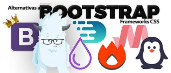

Frameworks CSS
Es una biblioteca de estilos visuales genéricos que se emplean uso para desarrollar una página web. Además de estos estilos visuales los frameworks CSS suelen añadir una serie de utilidades, como componentes para hacer cuadros de diálogo, tablas, carrusel de imágenes, etcétera.
Bootstrap
Este Framework es uno de los más populares en la actualidad, hasta la fecha de este Post se encuentra en su versión 4.4.1, cuenta con características muy importantes como esquemas de color, modificadores, clases útiles para usar formularios, cards, listas, tablas, videos, carrusel, ventanas modales, tooltips, etc.
Foundation
Este Framework junto con Bootstrap son uno de los más utilizados en la actualidad, Foundation es más sofisticado, asimismo es muy flexible y fácil de personalizar. Este Framework CSS te permite crear aplicaciones y páginas web adaptables a los dispositivos, empresas como Mozilla, HP, Cisco, eBay, Facebook, Adobe, Disney, entre otras, usan Foundation.
bulma
Este Framework CSS es open source y esta creado para trabajar con el diseño de cajas flexibles o Flexbox. Bulma es muy ligero, liviano y con soporte para móviles. Cuenta con mas de 200 mil usuarios hasta la actualidad y se encuentra entre los Frameworks más populares del área, junto con Bootstrap y Foundation, si quieres saber más de este Framework, puedes visitar su sitio web.semantic UI
Semantic UI es un framework de aplicaciones front end y emocionante que viene con un conjunto de
especificaciones para el intercambio de elementos de la interfaz entre los desarrolladores.
El vocabulario utilizado (para las clases e ID) es mucho más claro en comparación con las
alternativas que reduce la curva de aprendizaje.
Hay muchos estilos para los elementos HTML, los elementos de la interfaz de usuario y escenarios
(botones, formularios, tablas, acordeón, navegación, comentando, etc.).

referencias bibliograficas: https://desarrolloweb.com/colecciones/frameworks-css